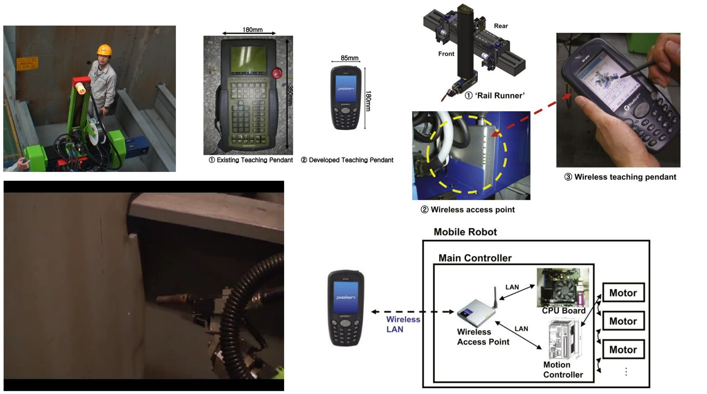

From CAGD theory to AI integration in ship design and production
Our foundation is the mathematics of free-form curves and surfaces. We developed methods to build G¹-continuous surfaces over boundary curve networks with T-junctions, and local T-spline surface skinning with shape preservation — the basis for representing complex hull geometry.

We apply CAGD to ship hull representation, modification and generation that satisfies design constraints. Our in-house hull design program supports hull form variation, surface generation and offset extraction, and is used with CFD, model tests and sea-trial data in an optimization loop developed with SNU partners and KRISO.
Classic 1−Cp variation keeps section shapes but limits variety; editing sections by hand is slow. We vary Cp directly on the hull surface using free-form deformation and constrained interpolation, and use parametric Cp-curve functions to create hull forms with a parallel middle body intuitively.
An RL agent modifies fore and aft parts of the hull, receives total resistance as reward, and learns variations that reduce resistance while keeping principal particulars. PPO and DDPG agents reduced total resistance by about 2.5% in our case study.

An engineering agent turns a designer's request (e.g. “design a 320K VLCC with minimized resistance”) into intent and parameters, retrieves ship data with RAG, calls hull-variation functions in a geometry kernel, and checks performance with a CFD-based surrogate model — closing the loop automatically. This is the core of our NRF project (2026–2030).

CNN-based models detect corroded areas in images and predict corrosion depth by mapping measured specimen thickness to detected regions, supporting inspection and safety diagnosis of marine structures.

With KEIT support, we develop reinforcement-learning models for equipment arrangement and pipe routing combined with a digital knowledge base, to automate ship outfitting design (2023–2027).

Our roots in production automation go back to doctoral research on a mobile welding robot for double-hull blocks: a PDA-based teaching pendant program and collision-free torch path generation. This experience underpins our long-term goal of linking 3D design models directly to welding robots in the shipyard.

Three active projects fuel a 5-year mid-term plan, evolving toward a 10-year vision.